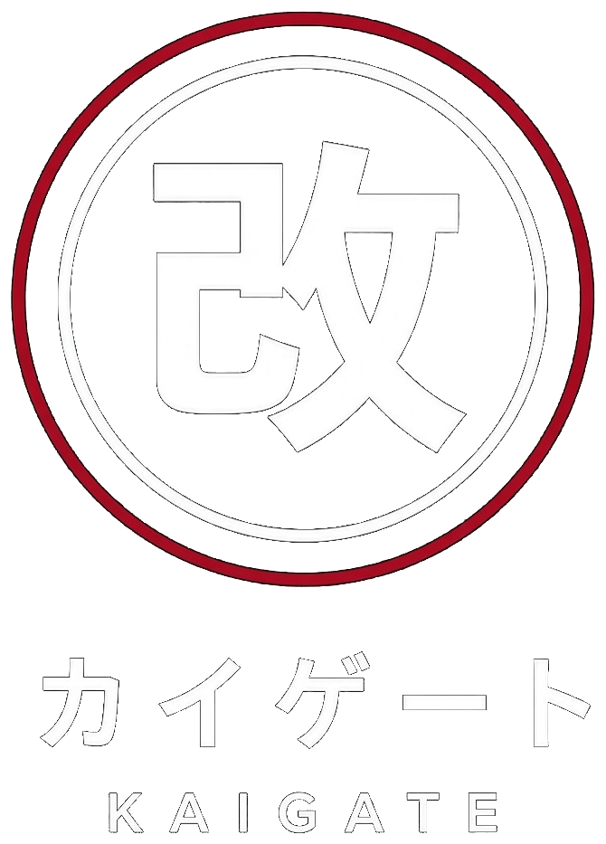

Display
AMOLED 1.32
Waveshare ESP32-S3-Touch-AMOLED. CO5300 QSPI, CST820 touch, ES8311 speaker path, LiPo gauge.

Smart shift knob
Universal commercial smart knob. ESP32-S3 firmware on a 466×466 circular AMOLED, plus the KaiGate companion app for Android and iOS.
Hardware
Waveshare ESP32-S3-Touch-AMOLED. CO5300 QSPI, CST820 touch, ES8311 speaker path, LiPo gauge.
Pitch and roll H-gate clustering plus a live two-axis G-meter. Address 0x68 on I2C0.
1027 coin ERM. Shift double-pulse and money-shift alert. Address 0x5A.
Vgate BLE / ELM327. RPM, speed, coolant, boost, IAT, voltage, DTCs.
GATT configurator, calibration wizard, circular lens studio, telemetry and DTC hub.
On-glass UI
2 s long-press toggles lock. Auto-relock after 10 s idle while stationary. Swipes die if speed is over 0.5 mph or a gear is in. Cold limiter holds the shift light at 3,500 RPM until coolant is 180 °F. Both values are live-tunable from the app.
Full-circle red/white flash, DRV2605L double-pulse, ES8311 beep. Money-shift compares predicted post-downshift RPM to redline using stored mph/rpm ratios. Idle mascot fades to /idle.gif after 30 s in neutral.
Companion
4,000–9,500 RPM, shift light, cold limiter, brightness. JDM Amber, Euro Sport, Monochrome, Cyberpunk Neon. 5-speed, 6-speed, dog-leg.
Live pitch and roll. Eight NVS clusters for N, 1–6, R. Confirmation uses speed/RPM while the engine is pulling.
Play, skip, volume. Cover art and title from the phone session. Mirrors the knob media screen over BLE.
Pan, zoom, auto-crop. Push GIF and wallpaper over SoftAP KaiGate_Setup / kaigate32 into LittleFS.
Live vitals plus stored runs. Same packet the glass uses.
Stored codes from the Vgate dongle. Touch CLEAR runs ELM mode 04.
Radio
NimBLE dual-role: GATT peripheral for the phone, BLE central for the Vgate dongle at the same time. Large GIF and wallpaper transfers raise SoftAP KaiGate_Setup.
Service 8f400001-7a3b-4c2d-9e1f-0a1b2c3d4e5f Tel 8f400002 telemetry notify Cfg 8f400003 config read/write Cmd 8f400004 command write IMU 8f400005 pitch/roll notify DTC 8f400006 codes notify Status 8f400007 wifi / lock Media 8f400008 now-playing
First drive
Firmware
cd firmware pio run -t upload pio run -t uploadfs pio device monitor
App
scripts\bootstrap_flutter.cmd cd app\kaigate flutter run :: or flutter build apk
Tree
KaiGate/ ├── branding/ official logos ├── docs/ hardware + BLE + this page ├── firmware/ PlatformIO, LVGL 8, LittleFS │ ├── include/ pins, protocol, types │ └── src/ hal, core, ble, net, media, ui ├── app/kaigate/ Flutter companion └── scripts/ bootstrap_flutter.cmd